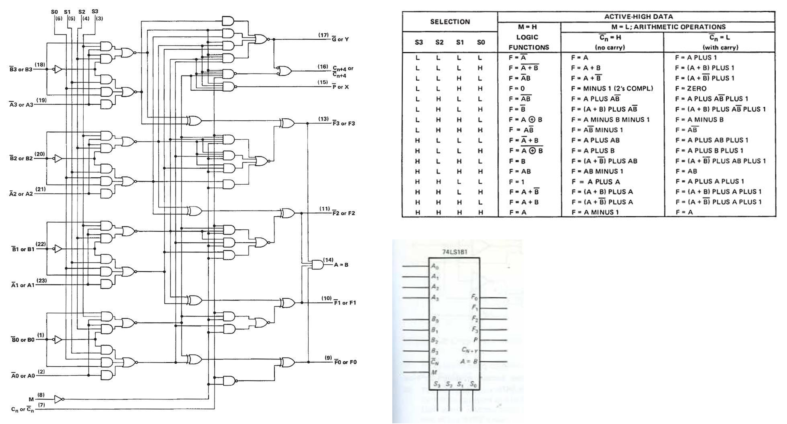

Introduction to Microcontrollers and Microcontroller Architecture
Ben Clifford
Welsh Centre for Printing and Coatings
Tuesday October 1, 2024
50 years of teaching microprocessors at Swansea!
Dr Davies in the Electronics lab
A brief history by our former colleague, Honoury Lecturer Dr Timothy Davies.
Started in 1972/1973 by Prof. David Aspinall and Dr. Erik Dagless, using bespoke equipment based on the Intel 8008.
Always using 8-bit micros such as Intel 8008, Intel 8085, Motorola 68HC11, Motorola 68HCS08…
Take-home lab, developed by Dr Davies, in 2020, used the Arduino Nano which is based on the Atmel (now MicroChip) ATmega328
One of our former students, Prof Sir Andy Hopper, asked why we are not teaching using the ARM processor which he helped develop.
Spring 2021 - the launch of a new microcontroller, the RP2040 which is packaged into a small module, costing only three pounds.
This is the microcontroller for our second-year EG-252 lab and is also used in the third-year module EG-3082 Embedded Systems launching this year,
You will therefore be using microcontrollers throughout this program
Introduction
In this week’s lecture, you will be given an introduction to microcontrollers focusing on what a microcontroller is, where they can be found and how they can be described using the their architecture. The lecture then moves on to introduce the Atmel ATmega328 microcontroller, which will be used in the practical sessions in this course, looking at its core architecture including the function of the arithmetic logic unit and registers.
Definition from the Oxford English Dictionary architecture
Computing. The conceptual structure and overall logical organization of a computer or computer-based system from the point of view of its use or design; a particular realization of this6.
Number of Bits
Figure 7: Architecture diagram showing number of bits used in a microcontroller
Figure 8 shows the data memory map of the Atmel Atmega328 which is an 8- bit MCU.
Figure 8: Memory map for the Atmel Atmega328 MCU
Applications of 8-bit and 32-bit MCUs
Figure 9: Venn diagram of the applications of the 8-bit MCU vs. the 32-bit MCU7
Market share of 8-bit, 16-bit and 32-bit MCUs in 2021
Figure 10: Market share of 8-bit, 16-bit and 32-bit MCUs in 20218
Memory
Figure 11: Architecture diagram showing memory types used in microcontrollers
Embedded vs external memory
Memory in modern microcontrollers can be classified as embedded or external dependent on whether this is physically located within the MCU itself or is connected separately.
Broadly speaking embedded memory that is found in a microcontroller can be classified into two categories:
Volatile: data is lost when power is removed – this is temporary storage.
Non-volatile: data is retained when power is removed – this is permanent storage.
Volatile and non-volatile memory can be further classified as illustrated in Figure 13.
Figure 13: Classification of volatile and non-volatile memory.
Instruction Set Architectures
Architecture diagram showing instruction sets used in microcontrollers
Reduced instruction Set Computer (RISC)
A RISC is a device with a small, highly optimized set of instructions which utilizes registers and a highly regular instruction pipeline, allowing instructions to be completed in a low number of clock cycles.
Complex Instruction Computer (CISC)
A CISC is a device in which single instructions can execute several low-level operations or are capable of multi-step operations or addressing modes within single instructions.
Example
As an example, consider the case where you want to multiply two numbers stored at addresses 0x0010 and 0x0011 respectively.
On a RISC based architecture microcontroller the code would look something like:
LDS r18,0x0010LDS r19,0x0011MUL r18, r19
However, on a CISC based architecture machine the multiply instruction may be able to perform the memory access instructions within its execution, meaning the code would look like this:
MUL0x0010,0x0011
Memory Architectures
Figure 14: Architecture diagram showing the memory architectures used in microcontrollers
Von-Neumann (Princeton) architecture
Figure 15: The Von Neumann architecture—data memory and program code use the same memory storage area and data busses
Harvard architecture
Figure 16: The Harvard architecture—data memory and program code use different memory storage areas and busses.
Modified Harvard architecture
Figure 17: The Harvard architecture—data memory and programcode use the same memory storage area, but data and program addresses use separate busses to access the memory.
How is a Microcontroller Described?
In summary, the final MCU classification shown in Figure 18 represents some of categories under microcontroller architecture which are focused around the system itself.
Figure 18: Classification of microcontroller systems
System or Core Architecure
In general, most microcontroller manufacturers will present a system wide, or core architecture in the form of a diagram which will appear early on in the data sheet for the device.
Atmel ATMega328P AVR
Figure 19: Block Diagram of the AVR Architecture (Source: Figure 6.1, Page 9 of the Atmel ATMega328P data sheet (Atmel 2015))
NXP HCS08 MCU
Figure 20: Block Diagram of the NXP HCS08 Architecture
The Atmel ATmega 328 Microcontroller
Figure 21: The Atmel® ATMega328/P is a low-power CMOS 8-bit microcontroller based on the AVR® enhanced RISC architecture.11
Introducing the Atmel ATMega328 MCU
This is an 8-bit CMOS microcontroller based on the AVR® enhanced RISC architecture with 131 instructions.
It has 2KB of Internal SRAM, 32 KB of Flash Memory and 1 KB of EEPROM.
It has 32 General Purpose Registers.
It can achieve up to 20 MIPS at 20 MHz (maximum clock frequency).
There are 8 Analog I/O pins connected to 10-bit analogue to digital converter (ADC).
There are 22 Digital I/O pins (6 capable of pulse-width modulation (PWM)).
The AVR core uses a Harvard memory architecture – with separate memories and busses for program and data.
Arithmetic Logic Unit
Figure 22: General purpose arithmetic logic unit (ALU)
Operation of the ALU
First, numbers are read from storage into the ALU’s data input ports.
Once inside the ALU, they’re modified by means of an arithmetic or logic operation (ADD, SUB, AND, OR…)
Flags are set in the Status Register according to the result of the operation.
Finally, the data is written back to storage via the ALU’s output port.
Example instruction
Figure 23: Add without carry instruction for the ATMega328
Example of the ALU from the 74LS181
The 74LS181 is a 4-bit microcontroller that supports 16 logical and 16 arithmetic operations.

Figure 24: The ALU for the 74LS181 MCU
Registers
A register is a group of memory bits with special addressing characteristics which is often used for a particular purpose.
Figure 25: Use of registers in ATMega328 programms
Registers in the ATMega328 MCU
Figure 26: Part of the memory map of the Atmel ATMega328/P MCU
The Register File
Figure 27: The register file for the Atmel ATMega328/P MCU
Each register is also assigned a data memory address, mapping them directly into the first 32 locations of the user data space.
Most of the instructions operating on the Register File have direct access to all registers, and most of them are single cycle instructions, however:
R0 – R15 are not available for all instructions, and
R26 – R31 have some added functions as pointer registers.
Using the Register File
Figure 28: Using the registers for an ADD without carry operation
Figure 29: Using the registers for an Load immediate (LDI) operation
X- Y- Z-Pointer Registers
Figure 30: The x-, y- and z- registers
Summary
In this lecture we have:
Familiarized ourselves with what a microcontroller is and where they are used.
Introduced describing a microcontroller by considering parts of its architecture and
Begun to look at the Atmel ATmega328 microcontroller focusing on its register file and the general-purpose registers.
On Canvas
There is a Canvas quiz which tests your recall of the topics covered in this lecture.